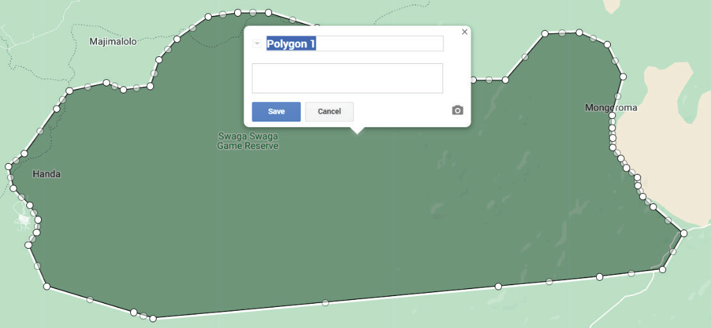

7. Unaweza kubadilisha kichwa cha habari kulingana na maudhui ya ramani.
Mfano tumia ramani ya hifadhi ya Swaga Swaga.
Nenda kwenye dirisha la kushoto mwa ramani, chagua “untitled map” kisha andika “Ramani ya Swaga Swaga” kwenye boksi lililoandikwa “Map title” na bofya kitufe cha “Save”.
8. Badili mwonekano wa ramani yako kwa kutumia rangi mbalimbali zinazopatikana.
Bofya kitufe cha kushoto cha kipanya ndani ya hifadhi ya Swaga Swaga, kisha bofya tena kitufe cha “Style” chagua rangi uipendayo, kwa mfano rangi ya kijani kama inavyowasilishwa katika Kielelezo namba 13.